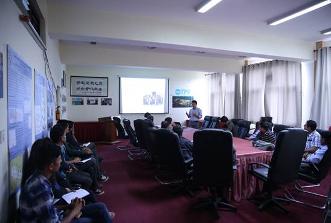
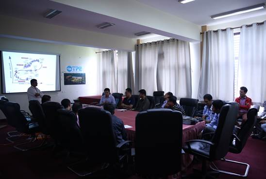

7月5日，应中国科学院加德满都科教中心（以下简称“加德满都中心”）、第三极环境计划和中国青藏高原研究会的邀请，国际应用系统分析研究所（International Institute for Applied Systems Analysis，IIASA，奥地利）刘伟博士访问加德满都中心，并作题为“From Disaster Risk to Disaster Resilience – Why, What and How”的学术报告。加德满都中心副主任Binod Dawadi主持报告，并介绍了加德满都中心的建设背景及近期主要工作进展。特里布文大学水文气象系、地质系、环境系等师生参加了报告会。
报告中，刘伟首先对国际应用系统分析研究所（International Institute for Applied Systems Analysis, IIASA）做了简要介绍。随后，他结合在尼泊尔西部及中国沿海地区已开展的系列研究，阐述了自然灾害变化规律，尤其强调了近几十年来尼泊尔西部自然灾害频率呈现增加趋势，造成的经济损失不断增大。最后，刘伟介绍了灾害恢复力的评估及其对生态系统可持续发展的贡献。与会人员就尼泊尔西部卡纳利河流域灾害评估、河流监测预警等问题展开了讨论。刘伟博士也希望通过国际应用系统分析研究所加强与加德满都中心的合作，共同开展尼泊尔自然灾害评估与灾害防控方面的研究。
报告结束后，Binod Dawadi和徐田利等人陪同刘伟博士参观了加德满都中心园区和主观测场。

学术报告现场

会后讨论